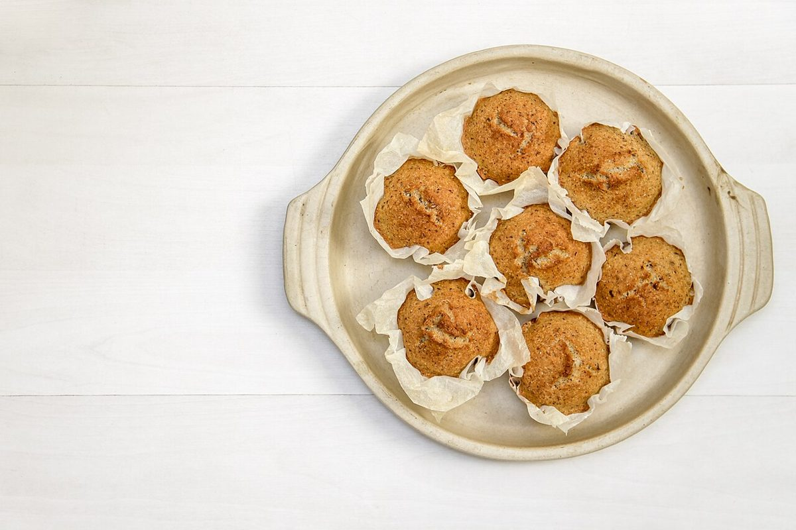

メニュー
メニュー
メニューと価格は準備中です。電卓の表示は、まだ「0」のまま。
表示0.
| メニュー | 準備中 |
|---|---|
| 価格 | 準備中 |
| ご予約 | 準備中 |
お店に確認でき次第、ここに掲載します。メニューの内容や価格について、制作側が推測で書くことはしません。詳しくは、電話(080-8250-5794)またはInstagramをご覧ください。

写真のイメージ
イメージ写真(お店の商品ではありません)
以下は、フリー素材のイメージ写真です。お店のメニューや商品を示すものではありません。